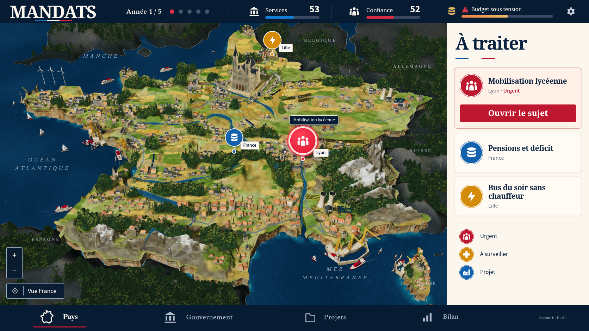
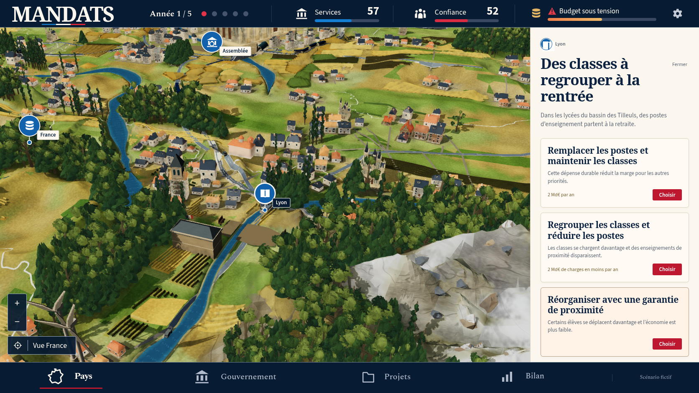
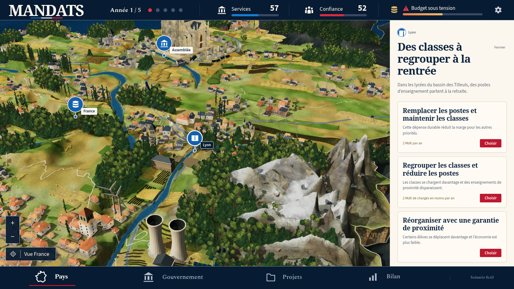
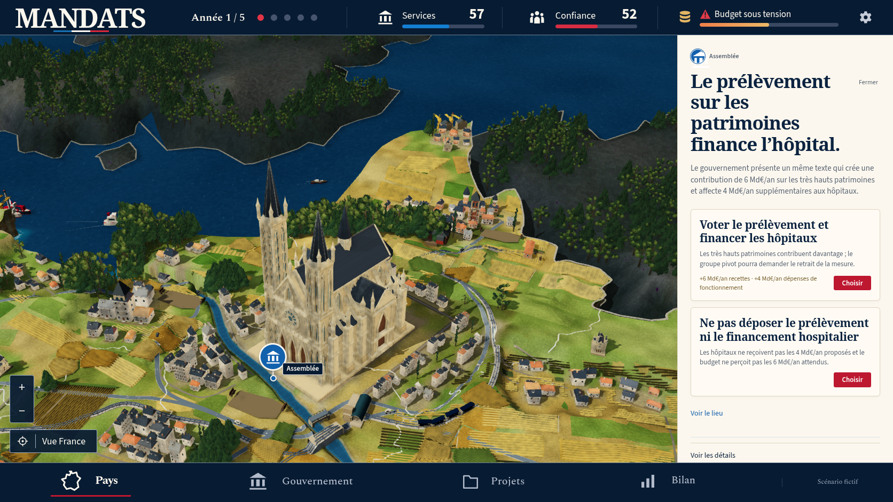
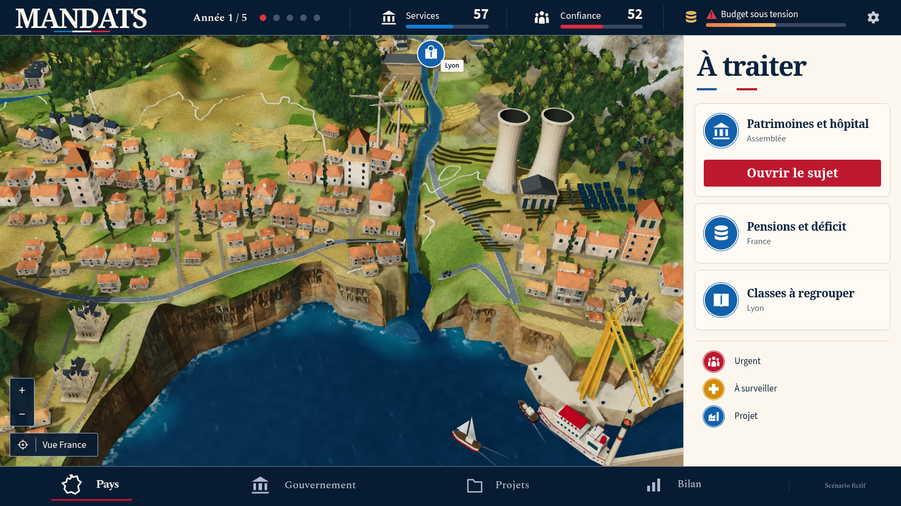
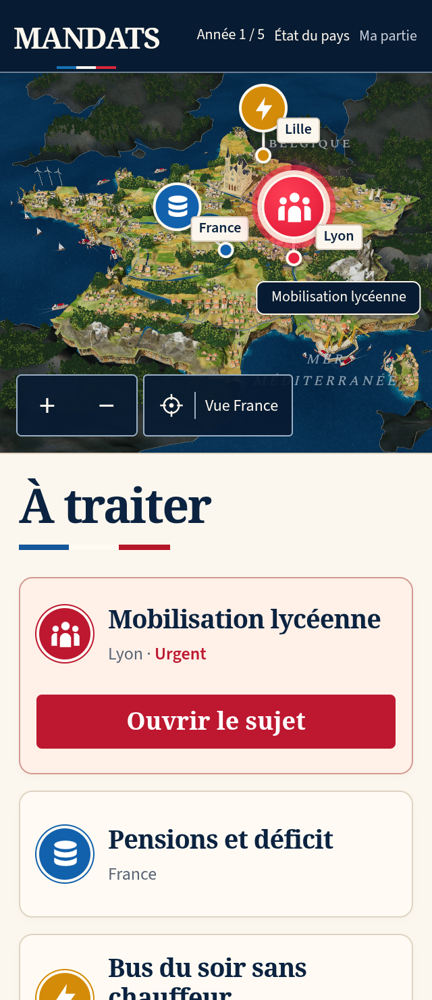
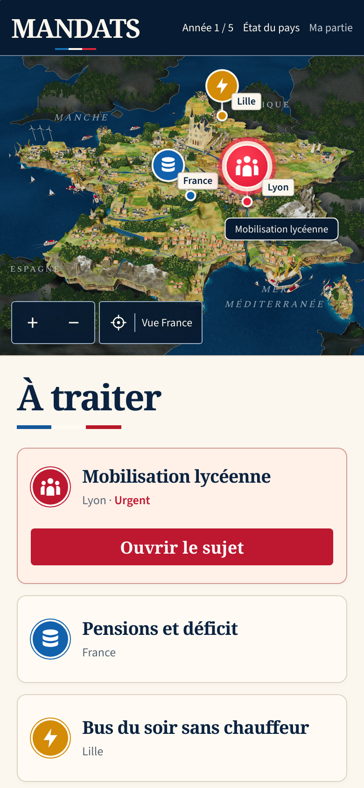

MANDATS : comparaison 49
Le diorama reste en dessous de la référence. Cette étape est validée techniquement, pas artistiquement. La reconstruction continue et la PR 194 reste en brouillon.
La vue comparée est issue d’une vraie décision scolaire dans une partie v12. Les événements et chiffres de la maquette ne sont pas injectés dans le jeu.


Référence confirmée.Partie réelle, obtenue avec les contrôles du jeu.
| Partie | Modification réelle | Écart restant |
|---|
| Bourgs | 52 maisons secondaires utilisent leurs variantes existantes à moins d’étages. Les dimensions XZ et pivots au sol des modèles détaillés et distants sont vérifiés à l’identique. Les onze accents civiques ajoutés sont limités aux grands ensembles ; les maisons sont moins étirées. | Les compositions et les matériaux restent moins riches. Paris garde des flèches opaques et une silhouette différente de la référence. |
| Alpes | Épaules abaissées, couloirs creusés dans le sol triangulé commun et alternance neige/roche révisée. 90 affleurements remplacent les 188 précédents. | Des versants restent larges et facettés. Les crêtes n’atteignent pas encore la finesse photographique de la maquette. |
| Navires et rivages | Coques de cargos bleu marine et éléments peints rouges sur les grands navires. Les géométries, ports et trajets restent ceux du jeu. | L’entrée du Rhône reste encaissée ; les grandes faces côtières sont encore trop régulières. |
| Préparation | La construction des arbres, bourgs et forêts voisines rend régulièrement la main au navigateur. Les placements restent déterministes ; les commandes et sauvegardes passent pendant la préparation. | Ces contrôles locaux ne prouvent ni les performances d’un appareil physique, ni la réussite de la nouvelle CI distante, ni la fidélité artistique. |

Bourgs, arbres et architecture, vue réelle.
Neige, roches et terrain commun.
Paris : silhouette encore différente de la référence.
Port, bateaux, écume et falaises ; cadrage obtenu au pointeur.Formats mobiles réels

320 × 740, DPR2, décision scolaire réelle.390 × 844, DPR2.
WPE WebKit : capture séparée après affichage de Babylon et fin du rendu.La capture du parcours scolaire original WebKit montre encore la vue de préparation : elle valide le parcours fonctionnel, pas le rendu 3D complet. La capture native ci-dessus et la reprise à haute densité du parcours original montrent la 3D réellement affichée.
Vérifications et limites
Build complet : 1 082 tests unitaires réussis, types, Vite, pré-rendu et 150 ressources hors connexion. Les suites originales rework et social réussissent respectivement 23 et 13 parcours, avec neuf et trois omissions prévues, sans échec ni reprise instable. Les contrôles WebKit originaux ciblés de densité, nouvelle partie et paysage réussissent. Aucun test, délai, worker ou réglage de reprise n’est modifié.
Treize captures natives de production vérifient les empreintes des bundles réellement servis et n’enregistrent aucune erreur JavaScript, console, HTTP ou requête. Le relevé géométrique trouve 17 monuments sans chevauchement de canopée, 2 544 sections de pieds d’arbres soutenues et les 90 bases de rochers soutenues par le terrain final. Ce relevé ne certifie pas toutes les collisions ni toutes les parties possibles.
L’hôpital est financé au tour 1 et livré au tour 3 par de vraies décisions. Son emplacement est déjà libre : cette observation ne démontre pas le masquage puis la restauration d’arbres chevauchants.
La CI distante du parent 48 conserve deux échecs WebKit : rework 22 réussites, neuf omissions, une attente de reprise dépassée ; story 24 réussites, 23 omissions, une nouvelle partie dépassant le délai à l’essai initial et à sa reprise configurée. La suite sociale suivante n’a pas été exécutée. Les succès locaux de la passe 49 ne remplacent pas ces résultats historiques.
Manifeste · Captures natives · Build · Appuis des arbres et rochers · Monuments et canopées · Hiérarchie des maisons · CI du parent